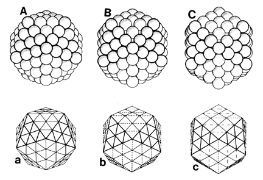
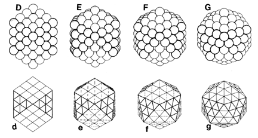

|   |
| Fig 466.00 Energy-valve Functions of Closest Sphere
Packing: This series illustrates the skew-
transformation of the 92-ball icosahedral aggregate
to a vector equilibrium conformation and its return
to the icosahedral state. Figs. 466A-G illustrate closest-sphere-packing transformation. Figs 466a-g illustrate polyhedral resultants. |